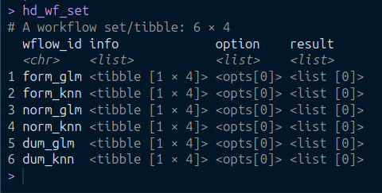
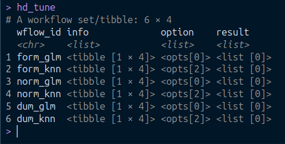

Show the code
library(pacman)
p_load(tidyverse, tidymodels, gt, finetune, bonsai)
The tidymodels package is a game-changer for the R ecosystem, providing a streamlined and intuitive approach to modeling. Built on the tidyverse foundation, it offers a cohesive framework that simplifies the journey from data wrangling to robust models. What makes tidymodels stand out is its consistent workflow, reducing the learning curve for data scientists and ensuring compatibility across different modeling packages【Kuhn and Silge (2022)】.
The workflows package is one of the standout components of tidymodels, making the iterative machine learning process in R more manageable. By bundling model fitting and data preprocessing steps into a single coherent object, workflows simplifies the complexities of the machine learning pipeline, ensuring each step is clearly defined and reproducible. This iterative machine learning process, as covered in “Tidy Modeling with R”【Kuhn and Silge (2022)】, is illustrated below:

The focus of this post, the workflowsets package, builds on the workflows package by extending its capabilities to handle multiple machine learning models. Since the best model for any given task is not predetermined, it’s crucial to test multiple models and compare their performances. workflowsets is designed to manage multiple workflows, making it easier to compare different modeling approaches and preprocessing strategies.
This blog post introduces the option_add function of the workflowsets package, which is used to control options for evaluating workflow set functions such as fit_resamples and tune_grid. For more information on this function, refer to the documentation with ?option_add.
We start by loading the packages we will be using for this post
library(pacman)
p_load(tidyverse, tidymodels, gt, finetune, bonsai)For this post we’ll use the heart disease dataset from kaggle.com. A preview of the data is given Table 1
heart_disease <- read_csv("heart_disease_dataset.csv")
head(heart_disease) |>
gt() |>
tab_header(
title = "Heart Diseases"
) |>
opt_stylize(
style = 2,
color = "cyan"
) |>
as_raw_html()| Heart Diseases | |||||||||||||||
|---|---|---|---|---|---|---|---|---|---|---|---|---|---|---|---|
| Age | Gender | Cholesterol | Blood Pressure | Heart Rate | Smoking | Alcohol Intake | Exercise Hours | Family History | Diabetes | Obesity | Stress Level | Blood Sugar | Exercise Induced Angina | Chest Pain Type | Heart Disease |
skimr::skim_without_charts(heart_disease) |>
gt() |>
tab_spanner(
label = "Character",
columns = character.min:character.whitespace
) |>
tab_spanner(
label = "Numeric",
columns = starts_with("numeric")
) |>
cols_label(
skim_type ~ "Type",
skim_variable ~"Variable",
n_missing ~ "Missing?",
complete_rate ~ "Complete?",
character.min ~ "Min",
character.max ~ "Max",
character.empty ~ "Empty",
character.n_unique ~ "Unique",
character.whitespace ~ "Gap",
numeric.mean ~ "Mean",
numeric.sd ~ "SD",
numeric.p0 ~ "Min",
numeric.p25 ~ "25%",
numeric.p50 ~ "Median",
numeric.p75 ~ "75%",
numeric.p100 ~ "Max"
) |>
cols_width(
skim_type ~ px(80),
everything() ~ px(70)
) |>
opt_stylize(
style = 2,
color = "cyan",
) |>
as_raw_html()| Min | Max | Empty | Unique | Gap | Mean | SD | Min | 25% | Median | 75% | Max |
|---|---|---|---|---|---|---|---|---|---|---|---|
?@tbl-preview-data shows there are no missing values, so we can proceed with our analysis.
Next, we will convert all character variables to factor data types
heart_diseases <- heart_disease |>
janitor::clean_names() |>
mutate(
across(where(is.character), factor),
exercise_hours = factor(exercise_hours),
stress_level = factor(stress_level),
heart_disease = factor(
heart_disease,
labels = c("No","Yes"),
levels = c(0, 1)
)
)GGally::ggscatmat(
data = heart_diseases,
columns = 1:ncol(heart_diseases),
color = "heart_disease",
alpha = .3
)GGally::ggcorr(
data = heart_diseases,
columns = 1:ncol(heart_diseases),
name = expression(rho),
geom = "circle",
size = 3,
min_size = 5,
max_size = 10,
angle = -45
) +
ggtitle("Correlation Plot of Numeric Variables")heart_diseases |>
ggplot(aes(heart_disease, fill = gender)) +
geom_bar(position = "dodge") +
labs(
x = "Heart disease",
y = "Frequency",
title = "Heart disease a bit more prevalent in male than females"
) +
ggthemes::scale_fill_fivethirtyeight()We won’t spend time on EDA and proceed with our modeling workflow.
we will split our data to 75% for training and 25% for testing, using the outcome variable (heart_disease) as the strata to ensure a balance split. Additionally, We will create validation folds to evaluate the models.
set.seed(832)
hd_split <- initial_split(heart_diseases, prop = .75, strata = heart_disease)
hd_train <- training(hd_split)
hd_folds <- vfold_cv(hd_train)
head(hd_train) |>
gt() |>
opt_stylize(
style = 2,
color = "cyan"
) |>
as_raw_html()| age | gender | cholesterol | blood_pressure | heart_rate | smoking | alcohol_intake | exercise_hours | family_history | diabetes | obesity | stress_level | blood_sugar | exercise_induced_angina | chest_pain_type | heart_disease |
|---|---|---|---|---|---|---|---|---|---|---|---|---|---|---|---|
We will use two models for our analysis:
K-nearest neighbors (KNN) model
Generalized linear model (GLM).
knn_spec <- nearest_neighbor(
neighbors = tune(),
weight_func = tune(),
dist_power = tune()
) |>
set_engine("kknn") |>
set_mode("classification")
glm_spec <- logistic_reg() |>
set_engine("glm", family = stats::binomial(link = "logit")) |>
set_mode("classification")Below is the specification we have set for the KNN model:
knn_spec |> translate()K-Nearest Neighbor Model Specification (classification)
Main Arguments:
neighbors = tune()
weight_func = tune()
dist_power = tune()
Computational engine: kknn
Model fit template:
kknn::train.kknn(formula = missing_arg(), data = missing_arg(),
ks = min_rows(tune(), data, 5), kernel = tune(), distance = tune())The KNN spec model is having three tuning parameters. For the GLM model we have the following:
glm_spec |> translate()Logistic Regression Model Specification (classification)
Engine-Specific Arguments:
family = stats::binomial(link = "logit")
Computational engine: glm
Model fit template:
stats::glm(formula = missing_arg(), data = missing_arg(), weights = missing_arg(),
family = stats::binomial(link = "logit"))The GLM specification is having no tuning parameter.
As seen in all the model specification above, the formula is missing. We’ll determine the formula for all models and the necessary preprocessing/feature engineering options we want to include in the next step using the recipe package
We have three preprocessing specification. The first defines the formula which we will use, the second includes normalizing all numeric predictors, and the final preprocessing step involves creating dummy variables for our categorical variables.
formula <- recipe(
heart_disease ~ .,
data = hd_train
)
normalize <- formula |>
step_normalize(all_numeric_predictors())
dummy <- normalize |>
step_dummy(all_factor_predictors())normalize |>
prep() |>
juice() |>
head() |>
gt() |>
opt_stylize(
style = 3,
color = "cyan"
)| age | gender | cholesterol | blood_pressure | heart_rate | smoking | alcohol_intake | exercise_hours | family_history | diabetes | obesity | stress_level | blood_sugar | exercise_induced_angina | chest_pain_type | heart_disease |
|---|---|---|---|---|---|---|---|---|---|---|---|---|---|---|---|
| -0.2983420 | Male | -0.784268085 | 1.13748976 | -1.4962849 | Current | None | 5 | No | No | No | 9 | -1.7689353 | Yes | Typical Angina | No |
| 0.6020865 | Female | -1.332244271 | 1.06281212 | 1.2243394 | Never | None | 6 | No | Yes | No | 2 | 1.3197224 | Yes | Asymptomatic | No |
| -1.0058214 | Female | 1.150772824 | 0.09200285 | -1.1452366 | Current | Heavy | 3 | No | Yes | Yes | 5 | -0.5662721 | No | Non-anginal Pain | No |
| -0.6199235 | Male | -1.623356620 | 1.28684503 | 0.2589566 | Current | Heavy | 8 | Yes | Yes | No | 2 | 0.7730573 | No | Typical Angina | No |
| -0.5556072 | Female | 0.003447684 | -0.87880642 | -1.1452366 | Former | None | 6 | Yes | No | Yes | 3 | -0.3749394 | Yes | Non-anginal Pain | No |
| -0.6199235 | Female | 0.500051103 | 1.43620030 | 0.1711946 | Current | Moderate | 9 | Yes | No | No | 7 | 0.4177250 | No | Asymptomatic | No |
Table 2 previews how the data looks after normalizing, which is the second feature engineering technique. Table 3 shows the data after creating dummy variables categorical variables.
dummy |>
prep() |>
juice() |>
head() |>
gt() |>
opt_stylize(
style = 2,
color = "cyan"
) |>
as_raw_html()| age | cholesterol | blood_pressure | heart_rate | blood_sugar | heart_disease | gender_Male | smoking_Former | smoking_Never | alcohol_intake_Moderate | alcohol_intake_None | exercise_hours_X1 | exercise_hours_X2 | exercise_hours_X3 | exercise_hours_X4 | exercise_hours_X5 | exercise_hours_X6 | exercise_hours_X7 | exercise_hours_X8 | exercise_hours_X9 | family_history_Yes | diabetes_Yes | obesity_Yes | stress_level_X2 | stress_level_X3 | stress_level_X4 | stress_level_X5 | stress_level_X6 | stress_level_X7 | stress_level_X8 | stress_level_X9 | stress_level_X10 | exercise_induced_angina_Yes | chest_pain_type_Atypical.Angina | chest_pain_type_Non.anginal.Pain | chest_pain_type_Typical.Angina |
|---|---|---|---|---|---|---|---|---|---|---|---|---|---|---|---|---|---|---|---|---|---|---|---|---|---|---|---|---|---|---|---|---|---|---|---|
hd_wf_set<- workflow_set(
preproc = list(
form = formula,
norm = normalize,
dum = dummy
),
models = list(
glm = glm_spec,
knn = knn_spec
)
)Using the workflowset function, we’ve tied three recipe objects to the three different models. The K-nearest neighbor model needs tuning as mentioned earlier.
set.seed(34443)
knn_grid <- knn_spec |>
extract_parameter_set_dials() |>
grid_regular(levels = 6)
knn_latin <- knn_spec |>
extract_parameter_set_dials() |>
grid_latin_hypercube(size = 300)
grid_control <- control_race(
save_pred = TRUE,
save_workflow = TRUE
)
knn_grid |>
ggplot(aes(dist_power, neighbors, col = weight_func)) +
geom_point() +
ggthemes::scale_color_colorblind() +
labs(
x = "Minkowski distance",
y = "Number of Neighbors",
title = "k-NN Regular Grid"
) +
facet_wrap(~weight_func) +
theme(
legend.position = "none"
)
knn_latin |>
ggplot(aes(dist_power, neighbors, col = weight_func)) +
geom_point() +
ggthemes::scale_color_tableau() +
labs(
x = "Minkowski distance",
y = "Number of Neighbors",
title = "k-NN Latin Hypercube Grid"
) +
facet_wrap(~weight_func) +
theme(
legend.position = "none"
)We set the tuning grid for the model and use the option_add function to specify it. We will test two different grid structures as shown in Figure 4.
option_add to Specify Model GridsWe can specify the grid to use for each model using the option_add function. Below is an image of hd_wf_set that we defined recently, and we will interpret its output.

The image above shows that option column is having zero values as well as the results column.
hd_tune <- hd_wf_set |>
option_add(
id = "norm_knn",
grid = knn_grid,
control = grid_control
) |>
option_add(
id = "form_knn",
grid = knn_grid,
control = grid_control
) |>
option_add(
id = "norm_knn",
grid = knn_latin,
control = grid_control
) |>
option_add(
id = "form_knn",
grid = knn_latin,
control = grid_control
) |>
option_add(
id = "dum_knn",
grid = knn_grid,
control = grid_control
) |>
option_add(
id = "dum_knn",
grid = knn_latin,
control = grid_control
)
After using the option-add function, we can see that KNN model specification have two options added to it. We can now proceed to tune our model.
doParallel::registerDoParallel(cores = 6)
hd_tune_res <- workflow_map(
hd_tune ,
fn = "tune_race_anova",
resamples = hd_folds,
seed = 3343,
verbose = TRUE
)i No tuning parameters. `fit_resamples()` will be attemptedi 1 of 6 resampling: form_glm✔ 1 of 6 resampling: form_glm (510ms)i 2 of 6 tuning: form_knn✔ 2 of 6 tuning: form_knn (1m 39.3s)i No tuning parameters. `fit_resamples()` will be attemptedi 3 of 6 resampling: norm_glm✔ 3 of 6 resampling: norm_glm (514ms)i 4 of 6 tuning: norm_knn✔ 4 of 6 tuning: norm_knn (1m 46.5s)i No tuning parameters. `fit_resamples()` will be attemptedi 5 of 6 resampling: dum_glm✔ 5 of 6 resampling: dum_glm (646ms)i 6 of 6 tuning: dum_knn✔ 6 of 6 tuning: dum_knn (2m 30.6s)autoplot(hd_tune_res)hd_tune_res |>
rank_results(rank_metric = "accuracy") |>
filter(.metric == "accuracy") |>
select(-c(.metric, preprocessor, model, n)) |>
gt() |>
cols_label(
wflow_id = "Model ID",
.config = "Model Number"
) |>
opt_stylize(
style = 2,
color = "cyan"
) |>
as_raw_html()| Model ID | Model Number | mean | std_err | rank |
|---|---|---|---|---|
Based on the results, it appears that the KNN model with no preprocessing is the best performing model.
The success of our KNN model, particularly with preprocessing, underscores the critical role of the option_add function. By utilizing option_add, we efficiently defined and refined our model’s tuning grid, allowing us to systematically explore and optimize hyperparameters. This approach not only enhances model performance but also ensures robustness and reliability in our predictive analytics pipeline.